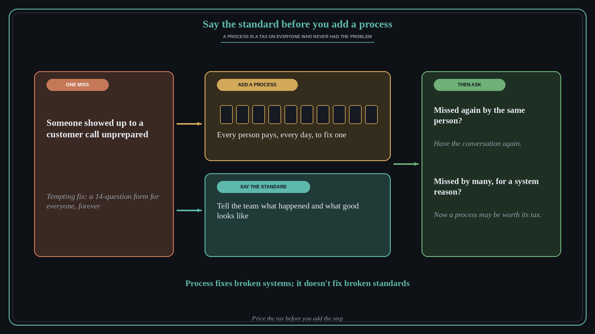

Say the standard out loud before you add a process: every process is a tax
Source: Henry Schuck (@HenryLSchuck), amplified by Des Traynor (@destraynor)
original post
What it claims
You can't fix culture with process. After one rep and one sales engineer turned up to a customer call unprepared, a manager spent his Saturday building a 14-question intake form that every sales engineer would have to fill in before every call, forever. Schuck told him to kill it. Every process is a tax, and you charge it to everyone on the team who never had the problem, every day, to fix the one person who did. Stack enough of those and everything slows down. Some processes are worth the tax; most aren't. The alternative: before you build a process, say the standard out loud. Get the team together, say what happened and what the standard is, point back to it every time someone misses it, and let people who can't meet it self-select out. If it happens again, have the conversation again, louder. Process fixes broken systems; it doesn't fix broken standards.
Why it matters for a PO
Teams reach for process after every bad Sprint: a new checklist in the Definition of Ready, an extra sign-off, a mandatory template before refinement, another field on the ticket. Each one feels cheap on the day it's added and is paid by the whole team for as long as it lives. A PO who asks "is this a system problem or a standard problem?" first keeps the working agreements short enough that people actually follow them. It also changes the retrospective conversation from "what form do we add?" to "what is our standard, and did we say it clearly?"
3 takeaways
- Treat every new step as a tax: who pays it, how often, and for how long.
- When one person misses, restate the standard to the team and hold to it before you change the system for everyone.
- Add a process only when the miss comes from the system, for example many people failing the same way for the same reason.
Practice this week
List the steps your team added to its working agreements, Definition of Ready, or ticket template in the last six months. For each, write who pays it, how often, and which incident caused it. Mark any step that was added after a single miss by one person. Bring the list to the next retrospective and propose removing one marked step, replacing it with a one-sentence standard the team agrees to say out loud.